Creating DataFrames: Construction Methods & Ingestion Patterns
Master every practical pathway to construct 2D DataFrames: Dict of lists, list of dicts (records), nested lists, dict of dicts, NumPy arrays, multiple Series alignment, empty DataFrame ingestion, and disk file parsing (CSV & Excel).
1. Introduction: From Raw Information to a Structured DataFrame
Imagine kijiye aap ek college examination cell ke data analyst hain. College admission aur examination ke doran student records alag-alag sources se aate hain:
- Web registration portal se raw JSON records aate hain (jaise
[{'name': 'Aarav', 'dept': 'CS'}, ...]). - Teacher ke Python grading script mein har subject ke scores separate lists mein store hote hain.
- Machine Learning models se predictions raw NumPy 2D arrays ke roop mein aati hain.
- Finance department records ko CSV ya Excel spreadsheets mein export karke deta hai.
Data chahe kisi bhi raw shape mein aaye, Pandas ka universal constructor pd.DataFrame() us raw Python information ko ek high-performance, 2D labeled spreadsheet matrix mein transform kar deta hai:
Raw Python Data ➔ pd.DataFrame() ➔ Structured 2D Table ➔ Exploratory Analysis & Visuals
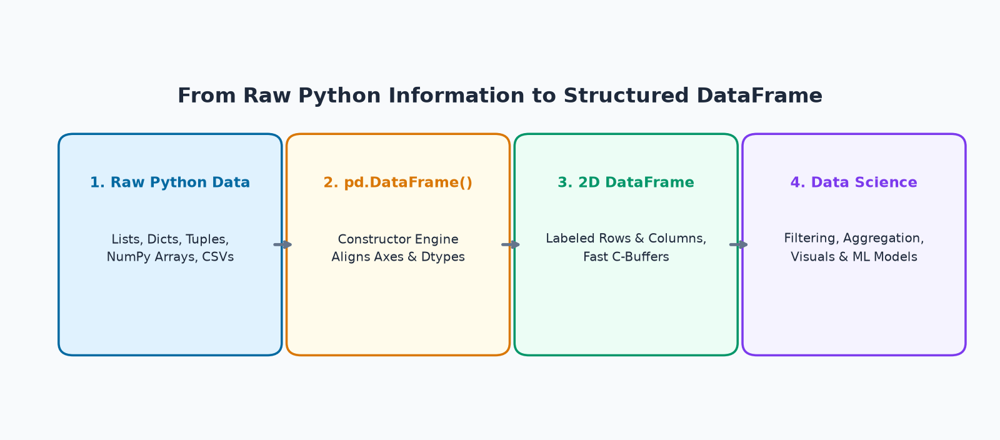
Why Are There Multiple Creation Methods?
Kyunki real-world software engineering mein data kabhi ek fixed format mein nahi milta! Agar aap database query karte hain, toh data row-by-row dictionaries mein milta hai. Agar aap physics sensor se data stream karte hain, toh raw numerical arrays aate hain. Is topic mein aap seekhenge ki apne source data ke structure ko pehchan kar sahi construction method kaise choose karein.
2. Creating a DataFrame Using a Dictionary of Lists
Pandas mein DataFrame create karne ka sabse widely used aur intuitive tareeqa hai: Dictionary of Lists. Is construction model ko Column-Oriented Creation bhi kehte hain, kyunki dictionary ki har key ek poore vertical column ko represent karti hai.
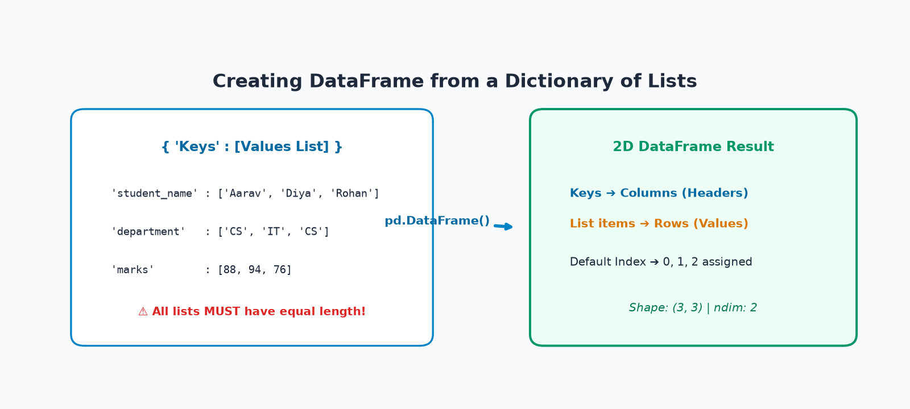
Core Rules of Dictionary of Lists Construction:
- Keys become Columns: Dictionary ki keys (jaise
'student_name','marks') DataFrame ke column headers ban jaati hain. - List elements become Rows: List ke andar ke items vertically row by row populate hote hain (index 0, 1, 2...).
- The Equal-Length Constraint: Sabhi lists ki length strictly barabar honi chahiye! Agar ek list mein 5 elements hain aur doosri mein 4, toh Pandas
ValueError: All arrays must be of the same lengthraise karega. - Default vs Custom Index: Agar aap
index=pass nahi karte, toh Pandas0, 1, 2...ka defaultRangeIndexassign karta hai.
Example 1: College Student Dataset (5 Synthetic Records)
Chaliye 5 students ke academic records ko dictionary of lists se DataFrame mein convert karte hain:
import pandas as pd
# Column-oriented data representation
student_dict = {
'student_name': ['Aarav Sharma', 'Diya Patel', 'Rohan Verma', 'Ananya Iyer', 'Kabir Singh'],
'roll_no' : [101, 102, 103, 104, 105],
'department' : ['CS', 'IT', 'CS', 'ECE', 'IT'],
'marks' : [88, 94, 76, 68, 91],
'attendance' : [92, 96, 85, 78, 90]
}
df_students = pd.DataFrame(student_dict)
print("--- STUDENT DATAFRAME CREATED FROM DICT OF LISTS ---")
print(df_students)
print(f"
Shape: {df_students.shape} (Rows: {df_students.shape[0]}, Columns: {df_students.shape[1]})")Example 2: Online Store Inventory & Derived Stock Value
Inventory management mein initial tabular construction ke baad derived business columns calculate karna sabse common operation hota hai:
import pandas as pd
inventory_data = {
'product' : ['Wireless Mouse', 'Mechanical Keyboard', 'USB-C Cable', 'LED Monitor'],
'category': ['Peripherals', 'Peripherals', 'Accessories', 'Displays'],
'price' : [599, 2499, 299, 11499],
'quantity': [50, 20, 150, 15]
}
df_inventory = pd.DataFrame(inventory_data)
# Derived column: stock_value = price * quantity
df_inventory['stock_value'] = df_inventory['price'] * df_inventory['quantity']
print(df_inventory[['product', 'price', 'quantity', 'stock_value']])
print(f"
Total Warehouse Stock Value: ₹{df_inventory['stock_value'].sum():,}")3. Creating a DataFrame Using a List of Dictionaries (Records)
Web APIs (FastAPI, Flask, Django REST), MongoDB, aur JSON loggers se aane wala data naturally List of Dictionaries ke roop mein hota hai. Is model ko Row-Oriented Creation kehte hain, kyunki har dictionary poore ek single record/row ko represent karti hai.
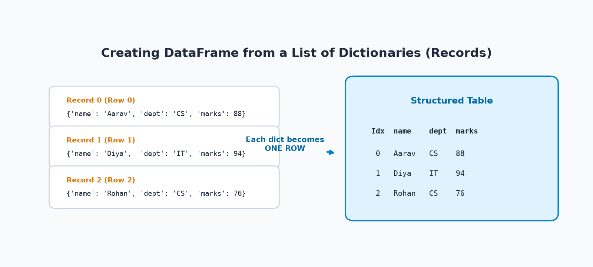
Key Properties of List of Dictionaries Construction:
- Each Dictionary = One Row: Dictionary ke andar ki values horizontal row cells ban jaati hain.
- Keys become Columns: Pandas sabhi dictionaries ke keys ka automatic Union leta hai aur unhe DataFrame columns banata hai.
- Order Preservation: Dictionaries list jis order mein pass hoti hai, rows usi order mein (0, 1, 2...) arrange hoti hain.
Example 1: Student Records from Web API JSON Format
import pandas as pd
# API-style record objects
student_records = [
{'student_name': 'Aarav Sharma', 'department': 'CS', 'marks': 88},
{'student_name': 'Diya Patel', 'department': 'IT', 'marks': 94},
{'student_name': 'Rohan Verma', 'department': 'CS', 'marks': 76}
]
df_records = pd.DataFrame(student_records)
print(df_records)Example 2: Handling Uneven Keys & Automatic Missing Values (NaN)
Agar kisi record mein koi optional key (jaise discount_code) missing ho, toh Pandas error throw karne ke bajaye us cell mein automatically NaN (Not a Number) fill kar deta hai:
import pandas as pd
orders = [
{'order_id': 1001, 'product': 'Mouse', 'qty': 2, 'price': 599, 'discount_code': 'SAVE10'},
{'order_id': 1002, 'product': 'Keyboard', 'qty': 1, 'price': 2499}, # Missing discount_code
{'order_id': 1003, 'product': 'Monitor', 'qty': 1, 'price': 11499, 'discount_code': 'DIWALI20'}
]
df_orders = pd.DataFrame(orders)
print(df_orders)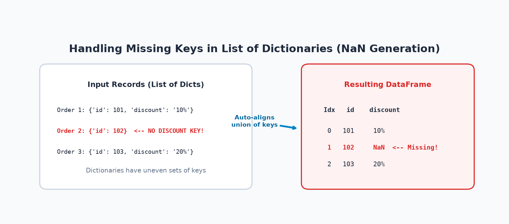
4. Creating a DataFrame from a List of Lists (Nested Lists)
Jab data raw tabular matrix (rows and columns) ke roop mein bina kisi header metadata ke aata hai, toh use List of Lists (Nested Lists) kaha jata hai.
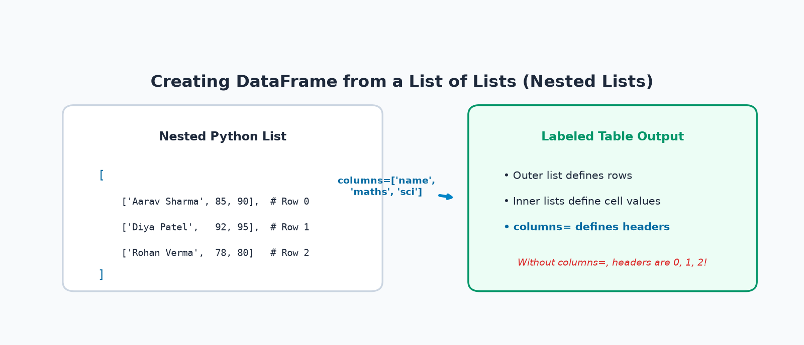
Dictionaries ke viprit, nested lists mein column names nahi hote.
Agar aap columns= parameter pass karna bhool jaate hain, toh Pandas default integer column headers 0, 1, 2... assign kar dega, jisse df['marks'] jaise semantic queries fail ho jayengi!
Example 1: Student Marks with Explicit Column Headers
import pandas as pd
# Outer list = Rows; Inner list = Cell values
marks_matrix = [
['Aarav Sharma', 85, 90],
['Diya Patel', 92, 95],
['Rohan Verma', 78, 80]
]
cols = ['student_name', 'maths', 'science']
df_nested_students = pd.DataFrame(marks_matrix, columns=cols)
print(df_nested_students)Example 2: Daily Meteorological Observations
import pandas as pd
temp_data = [
['Mon', 28.5, 33.0],
['Tue', 29.0, 34.5],
['Wed', 27.8, 32.2]
]
df_weather = pd.DataFrame(temp_data, columns=['Day', 'Morning_Temp_C', 'Evening_Temp_C'])
print(df_weather)5. Creating a DataFrame from a Dictionary of Dictionaries
Jab data Nested Dictionaries ke roop mein hota hai, toh Pandas ek bohot interesting pivoting rule follow karta hai:
• Outer Dictionary Keys ➔ DataFrame ke Columns ban jaate hain.
• Inner Dictionary Keys ➔ DataFrame ke Row Index Labels ban jaate hain!
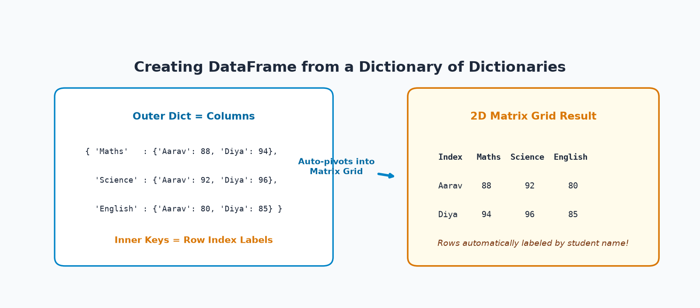
Example 1: Cross-Tabulated Subject Marks Matrix
import pandas as pd
# Outer keys = Subjects (Columns), Inner keys = Students (Row Index)
subject_matrix = {
'Maths' : {'Aarav': 88, 'Diya': 94, 'Rohan': 76},
'Science': {'Aarav': 92, 'Diya': 96, 'Rohan': 82},
'English': {'Aarav': 80, 'Diya': 85, 'Rohan': 74}
}
df_subjects = pd.DataFrame(subject_matrix)
print(df_subjects)
print(f"
Diya's Maths Score via .loc['Diya', 'Maths']: {df_subjects.loc['Diya', 'Maths']}")Example 2: Monthly Product Sales Matrix
import pandas as pd
monthly_sales = {
'January' : {'Mouse': 120, 'Keyboard': 45, 'Monitor': 18},
'February': {'Mouse': 150, 'Keyboard': 50, 'Monitor': 22},
'March' : {'Mouse': 180, 'Keyboard': 65, 'Monitor': 30}
}
df_sales = pd.DataFrame(monthly_sales)
print(df_sales)6. Creating a DataFrame from a NumPy Array
NumPy track mein humne 2D ndarrays ke fast contiguous C-buffers aur vectorized math ko detail mein padha tha. NumPy array ko Pandas DataFrame mein convert karna machine learning (Scikit-Learn, TensorFlow, PyTorch) workflows ka foundation hai:
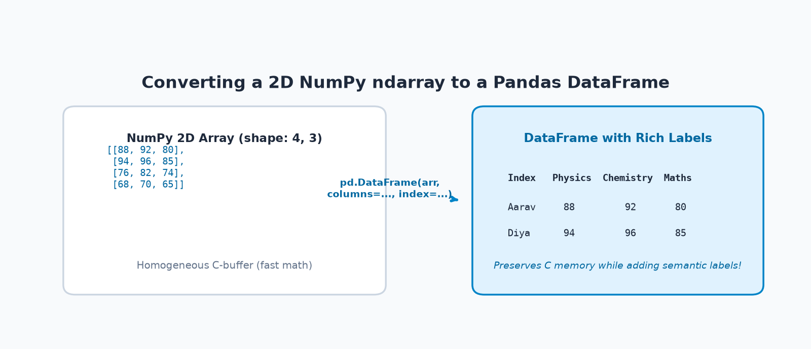
NumPy Array vs DataFrame Conversion Mechanics:
- Shape Preserved: NumPy array ka shape
(4, 3)directly DataFrame ke 4 rows aur 3 columns ban jaata hai. - Zero Copy when Possible: Agar numerical types match karte hain, toh Pandas array ke memory buffer ko reuse karta hai.
- Labels Enrichment: Raw NumPy array anonymous numbers hoti hai;
columns=aurindex=pass karke hum use business meaning dete hain.
Example 1: Converting 2D Numerical Marks Matrix
import numpy as np
import pandas as pd
# 1. 2D NumPy array (4 students x 3 subjects)
np_marks = np.array([
[88, 92, 80],
[94, 96, 85],
[76, 82, 74],
[68, 70, 65]
])
subjects = ['Physics', 'Chemistry', 'Maths']
students = ['Aarav', 'Diya', 'Rohan', 'Ananya']
# 2. Convert to labeled DataFrame
df_np_marks = pd.DataFrame(np_marks, columns=subjects, index=students)
print("NumPy Array Shape :", np_marks.shape)
print("DataFrame Shape :", df_np_marks.shape)
print("
Converted DataFrame:")
print(df_np_marks)Example 2: Numerical Quarterly Sales Matrix
import numpy as np
import pandas as pd
sales_matrix = np.array([
[150000, 180000, 210000, 250000],
[80000, 95000, 110000, 130000],
[45000, 52000, 60000, 75000]
])
quarters = ['Q1', 'Q2', 'Q3', 'Q4']
products = ['Laptops', 'Monitors', 'Keyboards']
df_sales_matrix = pd.DataFrame(sales_matrix, columns=quarters, index=products)
print(df_sales_matrix)7. Creating a DataFrame from Multiple Series & Index Alignment
Topic 2 mein humne seekha tha ki Series 1D labeled array hoti hai. Jab aap multiple Series ko ek dictionary mein wrap karke pd.DataFrame() mein pass karte hain, toh Pandas unhe horizontally align karke 2D DataFrame bana deta hai!
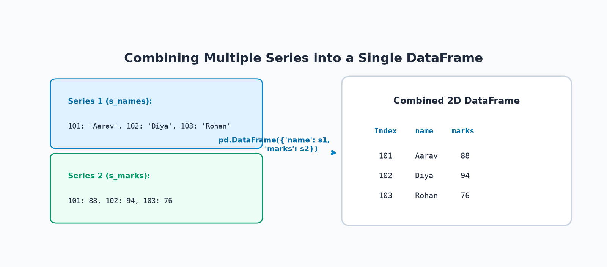
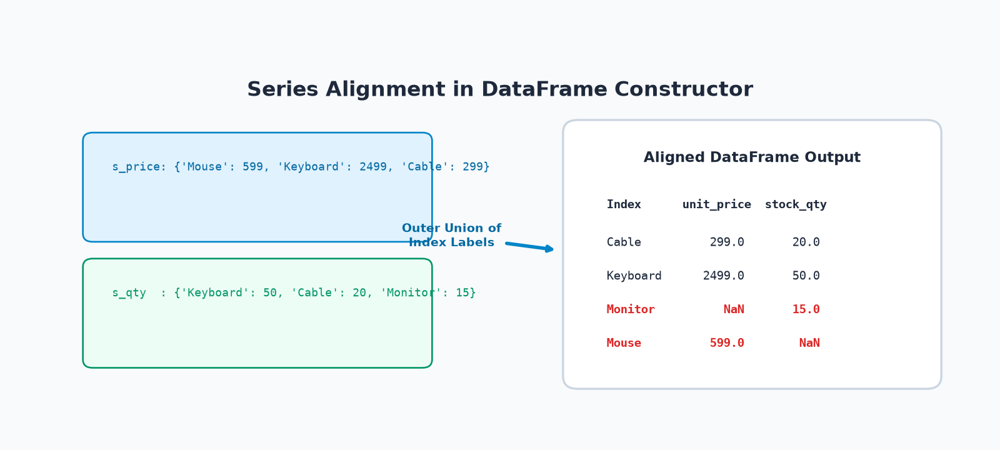
Example 1: Combining Student Profile Series
import pandas as pd
roll_indices = [101, 102, 103]
s_names = pd.Series(['Aarav', 'Diya', 'Rohan'], index=roll_indices)
s_marks = pd.Series([88, 94, 76], index=roll_indices)
s_dept = pd.Series(['CS', 'IT', 'CS'], index=roll_indices)
df_combined = pd.DataFrame({
'name' : s_names,
'marks' : s_marks,
'department': s_dept
})
print(df_combined)Example 2: Mismatched Series Alignment & Missing Values
Agar do Series ke index labels completely identical nahi hain, toh Pandas unka Outer Union create karta hai aur missing intersections par NaN fill karta hai:
import pandas as pd
# Series with non-matching product labels
s_price = pd.Series([599, 2499, 299], index=['Mouse', 'Keyboard', 'Cable'])
s_qty = pd.Series([50, 20, 15], index=['Keyboard', 'Cable', 'Monitor'])
df_store = pd.DataFrame({
'unit_price': s_price,
'stock_qty' : s_qty
})
print(df_store)8. Creating an Empty DataFrame & Record Ingestion Patterns
Data engineering mein kai baar dataset runtime par dynamic events (user clicks, websocket streams, sensor readings) se build hota hai. Aise scenarios mein DataFrame ko populate karne ka sahi aur galat tareeqa samajhna performance ke liye critical hai:
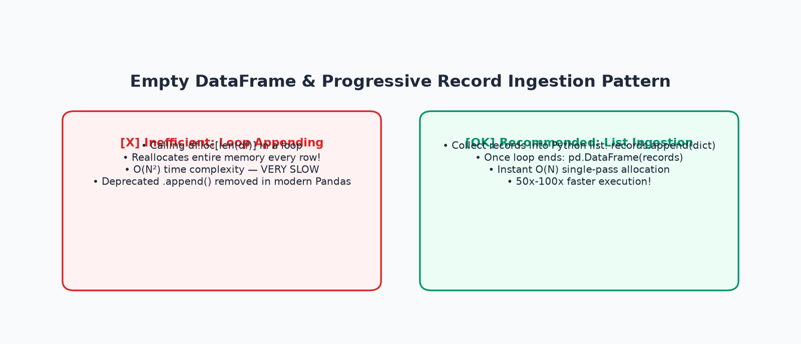
Kabhi bhi for-loop ke andar DataFrame mein row-by-row append na karein!
Har bar jab aap df.loc[len(df)] = new_row call karte hain, Pandas poore memory buffer ko copy karta hai ($O(N^2)$ quadratic slowdown).
Purana DataFrame.append() method modern Pandas mein completely remove ho chuka hai!
Example 1: Initializing Empty DataFrame with Predefined Headers
import pandas as pd
# Schema definition with 0 rows
df_empty = pd.DataFrame(columns=['student_name', 'department', 'marks'])
print("Empty DataFrame Shape:", df_empty.shape)
# Populating complete columns by vectorized assignment
df_empty['student_name'] = ['Aarav', 'Diya']
df_empty['department'] = ['CS', 'IT']
df_empty['marks'] = [88, 94]
print("
Populated DataFrame:")
print(df_empty)Example 2: The High-Performance List Ingestion Pattern (Best Practice)
Jab tak stream chal rahi hai, tab tak simple Python list mein records append karein, aur process end hone par ek single call se DataFrame construct karein:
import pandas as pd
# 1. Fast Python list accumulator
records_buffer = []
# 2. Simulated streaming loop
raw_events = [
('S101', 'Aarav', 88),
('S102', 'Diya', 94),
('S103', 'Rohan', 76)
]
for sid, name, score in raw_events:
records_buffer.append({'student_id': sid, 'name': name, 'marks': score})
# 3. Single-pass O(N) allocation
df_ingested = pd.DataFrame(records_buffer)
print(df_ingested)9. Specifying Columns, Custom Indexing & Data Types
DataFrame constructor parameters aapko raw dataset par absolute control dete hain:
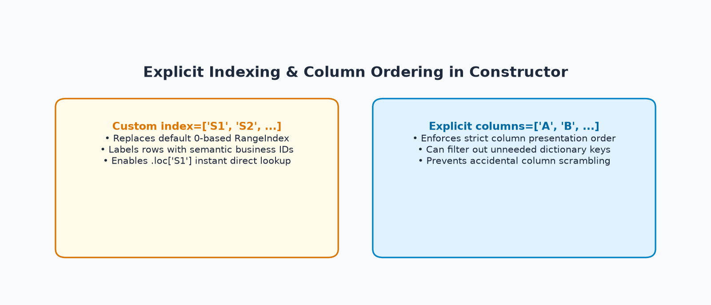
Example 1: Explicit Column Presentation Order & Custom Index Labels
import pandas as pd
raw_data = {
'marks' : [88, 94, 76],
'student_name': ['Aarav', 'Diya', 'Rohan'],
'department' : ['CS', 'IT', 'CS']
}
# Controlling order: name first, then department, then marks
# Custom index: S101, S102, S103
df_custom = pd.DataFrame(
raw_data,
columns=['student_name', 'department', 'marks'],
index=['S101', 'S102', 'S103']
)
print(df_custom)
print(f"
Direct Lookup S102: {df_custom.loc['S102', 'student_name']} ({df_custom.loc['S102', 'marks']} marks)")Example 2: Data Types (dtypes) Inspection & Safe astype() Conversion
import pandas as pd
items_data = {
'item_id' : ['101', '102', '103'], # Currently strings
'price' : [599.0, 2499.0, 299.0],
'in_stock' : [1, 0, 1]
}
df_items = pd.DataFrame(items_data)
print("Initial dtypes:")
print(df_items.dtypes)
# Type conversions: item_id -> int, in_stock -> bool
df_items['item_id'] = df_items['item_id'].astype('int64')
df_items['in_stock'] = df_items['in_stock'].astype(bool)
print("
Converted dtypes:")
print(df_items.dtypes)
print("
Converted DataFrame Table:")
print(df_items)10. Choosing the Right DataFrame Creation Method: The Decision Guide
Beginners aksar sochte hain: "Sir, mujhe kaunsa method kab use karna chahiye?" Answer bohot simple hai: Aapka creation method aapke input data ke structure par depend karta hai!
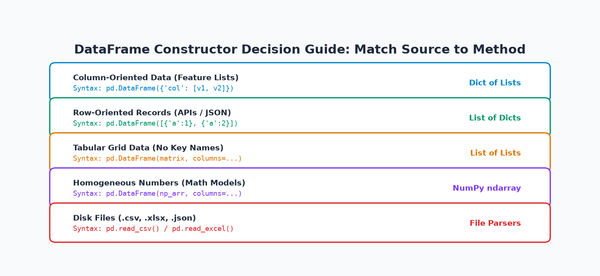
| Creation Method | Input Structure | Representation | Main Advantage | Common Limitation | Real-Life Use Case |
|---|---|---|---|---|---|
| Dict of Lists | {'col': [v1, v2]} |
Keys = Cols, Lists = Rows | Natural column-oriented writing | All lists must have equal length | Hand-coded datasets, experiment tables |
| List of Dicts | [{'a': 1}, {'a': 2}] |
Each dict = One Row | Handles missing optional keys cleanly | Slightly higher memory overhead | Web APIs (REST/JSON), MongoDB records |
| List of Lists | [[1, 2], [3, 4]] |
Outer = Rows, Inner = Cells | Lightweight, minimal punctuation | Must supply columns= manually |
SQL cursor results, tabular matrix dumps |
| Dict of Dicts | {'col': {'row': v}} |
Outer = Cols, Inner = Rows | Auto-pivots into a 2D matrix | Harder to read for large datasets | Cross-tabulated matrices, distance grids |
| NumPy Array | np.ndarray (2D) |
Shape (M, N) matrix |
Blazing fast zero-copy memory reuse | Homogeneous type in raw source | Machine learning models (scikit-learn) |
| Series Dict | {'c1': s1, 'c2': s2} |
Keys = Cols, Index = Rows | Automatic index label alignment | Mismatched keys create NaNs | Joining pre-computed feature vectors |
| CSV / Excel Files | .csv or .xlsx |
Disk file parsed to RAM | Handles gigabytes of persistent data | Disk I/O latency, dependency required | Production data lakes, business reports |
| Empty DataFrame | pd.DataFrame() |
Initial schema definition | Prepares structure for streaming | Appending in loop is slow anti-pattern | Event handlers, websocket ingestion |
11. Creating DataFrames from Files: CSV & Excel File I/O
Real data science jobs mein aap manually Python dictionaries likhne ke bajaye disk par mojood CSV (Comma-Separated Values) aur Excel spreadsheets ko memory mein load karte hain:
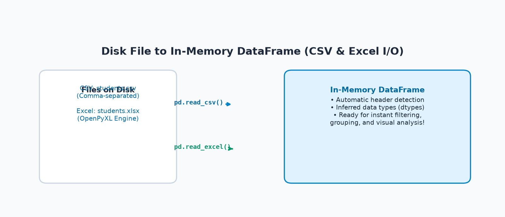
File Ingestion Essentials:
pd.read_csv('filename.csv')— Fast C-parser use karta hai. Header row automatically columns ban jaati hai.pd.read_excel('filename.xlsx')— Excel spreadsheets ke liyeopenpyxlengine use karta hai.- The index=False Rule: Jab aap
to_csv()yato_excel()se data export karte hain, toh hameshaindex=Falsepass karein, taaki dobara read karne par unwantedUnnamed: 0column na ban jaaye!
Example 1: CSV Export and Import Round-Trip
import pandas as pd
# 1. Create a synthetic student DataFrame
data = {
'student_name': ['Aarav', 'Diya', 'Rohan'],
'marks' : [88, 94, 76],
'department' : ['CS', 'IT', 'CS']
}
df_orig = pd.DataFrame(data)
# 2. Save to CSV without the extra index column
df_orig.to_csv('students_export.csv', index=False)
# 3. Read back from CSV file
df_loaded_csv = pd.read_csv('students_export.csv')
print("--- DATAFRAME LOADED FROM CSV FILE ---")
print(df_loaded_csv)
print(f"
Shape: {df_loaded_csv.shape}")Example 2: Excel Spreadsheet Export and Ingestion via openpyxl
import pandas as pd
# Exporting to Excel format (.xlsx)
df_orig.to_excel('students_export.xlsx', index=False, engine='openpyxl')
# Reading back from Excel
df_loaded_excel = pd.read_excel('students_export.xlsx', engine='openpyxl')
print("--- DATAFRAME LOADED FROM EXCEL FILE ---")
print(df_loaded_excel)12. Verifying a Newly Created DataFrame: The 8-Point Diagnostic Checklist
Jaise hi aap koi DataFrame create ya load karein, analysis shuru karne se pehle yeh 8 diagnostics zaroor verify karein:
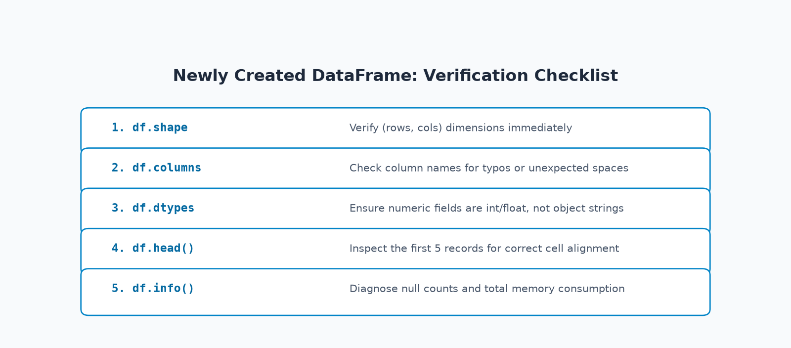
Properties vs Methods Distinction:
Hamesha yaad rakhein ki shape, columns, index, aur dtypes properties / attributes hain — inme parentheses () nahi lagti!
Jabki head(), tail(), info(), aur describe() methods hain jisme parentheses lagti hain.
Verification Example on Store Inventory Dataset
import pandas as pd
df_store = pd.DataFrame({
'product' : ['Mouse', 'Keyboard', 'Cable', 'Monitor'],
'category': ['Peripherals', 'Peripherals', 'Accessories', 'Displays'],
'price' : [599, 2499, 299, 11499],
'quantity': [50, 20, 150, 15]
})
print("1. Dimensions (shape) : ", df_store.shape)
print("2. Column Names : ", list(df_store.columns))
print("3. Row Index : ", df_store.index)
print("
4. Column Data Types (dtypes):")
print(df_store.dtypes)
print("
5. First 2 Rows (head):")
print(df_store.head(2))
print("
6. Numerical Summary (describe):")
print(df_store.describe().round(1))13. Real-World Mini-Project: Student Dataset Builder
Chaliye is topic ke sabhi theoretical concepts (creation pathways, indexing, derived features, filtering, department groupings, aur data-driven visuals) ko ek complete, runnable end-to-end 10-step mini-project mein execute karte hain:
import pandas as pd
import numpy as np
# ============================================================
# STEP 1: Construct DataFrame via Column-Oriented Dict of Lists
# ============================================================
project_dict = {
'student_id' : ['S101', 'S102', 'S103', 'S104', 'S105', 'S106'],
'student_name': ['Aarav Sharma', 'Diya Patel', 'Rohan Verma', 'Ananya Iyer', 'Kabir Singh', 'Meera Nair'],
'department' : ['CS', 'IT', 'CS', 'ECE', 'IT', 'CS'],
'marks' : [88, 94, 76, 68, 91, 84],
'attendance' : [92, 96, 85, 78, 90, 88],
'study_hours' : [6.5, 8.0, 5.0, 3.5, 7.5, 6.0]
}
df_project = pd.DataFrame(project_dict)
# ============================================================
# STEP 2: Equivalent Construction via List of Dictionaries (Verification)
# ============================================================
records_equiv = df_project.to_dict(orient='records')
df_from_records = pd.DataFrame(records_equiv)
print(f"Step 2 Check: Equivalent shapes? {df_project.shape == df_from_records.shape}")
# ============================================================
# STEP 3: Inspect Dataset Dimensions & Column Types
# ============================================================
print(f"Dataset Dimensions: {df_project.shape[0]} Rows × {df_project.shape[1]} Columns")
# ============================================================
# STEP 4: Set Meaningful Business Index (student_id)
# ============================================================
df_project = df_project.set_index('student_id')
# ============================================================
# STEP 5: Derived Column Engineering (Distinction >= 85)
# ============================================================
df_project['result_grade'] = np.where(df_project['marks'] >= 85, 'Distinction', 'Merit')
# ============================================================
# STEP 6: Filter High Scorers (Marks >= 80)
# ============================================================
distinction_list = df_project[df_project['marks'] >= 80]
print(f"
--- DISTINCTION HOLDERS (>= 80 Marks) - Total {len(distinction_list)} ---")
print(distinction_list[['student_name', 'department', 'marks', 'result_grade']])
# ============================================================
# STEP 7: Calculate Overall Class Metrics
# ============================================================
avg_marks = df_project['marks'].mean()
topper_id = df_project['marks'].idxmax()
topper = df_project.loc[topper_id]
print("
--- CLASS METRICS ---")
print(f"Class Average Marks : {avg_marks:.2f}")
print(f"Batch Topper : {topper['student_name']} ({topper['department']}) with {topper['marks']} marks")
# ============================================================
# STEP 9: Department Comparison
# ============================================================
dept_stats = df_project.groupby('department')['marks'].agg(['count', 'mean']).round(1)
print("
--- DEPARTMENT-WISE PERFORMANCE ---")
print(dept_stats)
Construction Method Convenience: Step 1 ke initial creation ke liye Dict of Lists sabse convenient tha kyunki code concise aur readable tha.
Lekin agar hume web API se incremental JSON data receive karna hota, toh List of Dictionaries pattern sabse resilient hota.
Scientific integrity disclaimer: Correlation between study hours and marks ($r = 0.9959$) demonstrates statistical association in this synthetic sample, not direct clinical causation!
14. Visualizing DataFrame Data: 4 Data-Driven Charts
DataFrame ke tabular data ko Matplotlib charts ke sath communicate karna Data Science storytelling ka core skill hai:
Chart 1: Student Marks Bar Chart
Individual student scores with 80-mark distinction threshold:
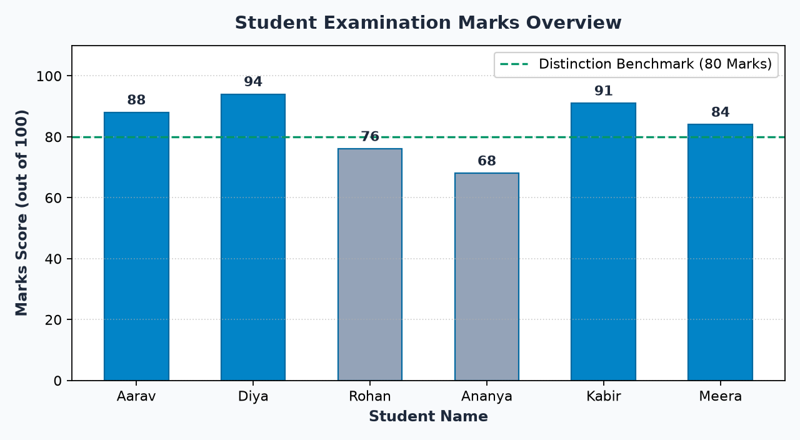
import matplotlib.pyplot as plt
students = ['Aarav', 'Diya', 'Rohan', 'Ananya', 'Kabir', 'Meera']
marks = [88, 94, 76, 68, 91, 84]
plt.figure(figsize=(8, 4.4), dpi=160)
colors = ['#0284c7' if m >= 80 else '#94a3b8' for m in marks]
plt.bar(students, marks, color=colors, width=0.55)
plt.axhline(80, color='#059669', linestyle='--', label='Distinction (80 Marks)')
plt.ylabel("Marks Score")
plt.title("Student Examination Marks Overview")
plt.legend()
plt.show()Chart 2: Department-Average Marks Comparison
Aggregated department means (CS: 82.7, ECE: 68.0, IT: 92.5):
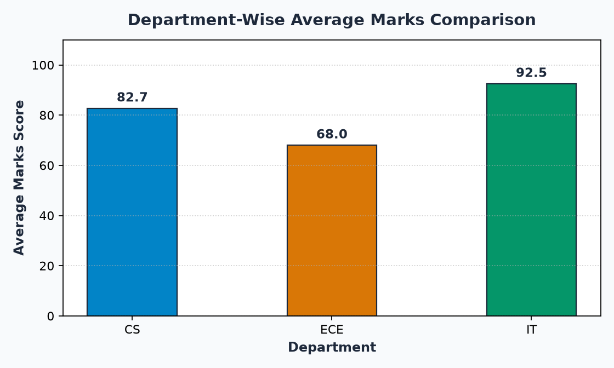
Chart 3: Product Stock Value Bar Chart
Warehouse stock valuation derived from price multiplied by quantity:
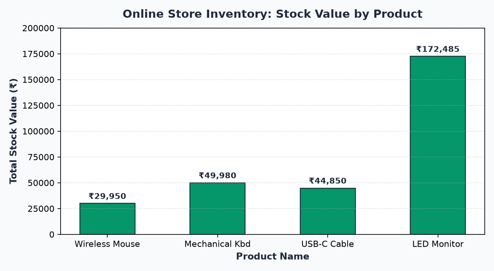
Chart 4: Daily Temperature Comparison
Grouped bar comparison of morning vs evening temperatures:
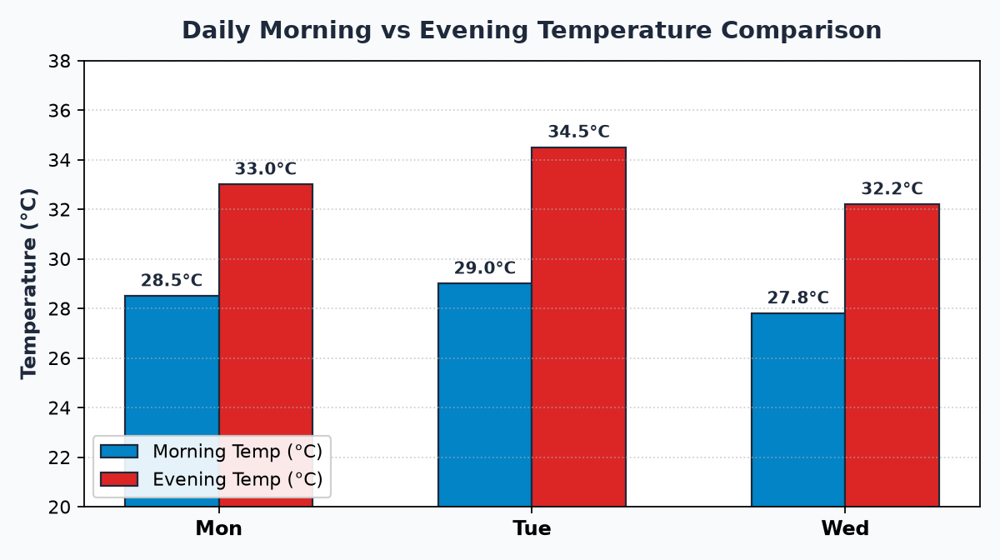
15. Top 12 Beginner Mistakes & How to Debug Them
DataFrame construct karte waqt beginners yeh 12 standard mistakes karte hain. Inke symptoms aur remedies ko memorize kar lein:
Failing Code: pd.DataFrame({'name': ['Aarav', 'Diya'], 'marks': [88, 92, 75]})
Reason: List lengths mismatch (2 vs 3 items). 2D DataFrame rectangular hona zaroori hai.
Fix: Sabhi lists ki length strictly barabar karein.
Failing Code: pd.DataFrame([['Aarav', 88], ['Diya', 94]]) ➔ Headers become 0, 1
Reason: Nested lists mein column metadata nahi hota.
Fix: Explicitly pass karein: columns=['student_name', 'marks'].
Failing Code: df['student_Name'] ya df[' marks'] ➔ KeyError
Reason: Column keys case-sensitive hoti hain aur whitespace matter karta hai.
Fix: list(df.columns) print karke exact string match karein.
Failing Code: Sochna ki outer key row banegi aur inner key column.
Reason: Pandas mein outer keys = Columns, aur inner keys = Row Index.
Fix: Agar inverse chahiye toh .T (Transpose) use karein: df.T.
Failing Code: Expecting an error when a dictionary misses an optional key.
Reason: Pandas auto-unions all keys and places NaN where keys are omitted.
Fix: Missing values ko handle karne ke liye df.fillna(0) use karein.
Failing Code: pd.DataFrame({'a': [1, 2, 3]}, index=['r1', 'r2']) ➔ ValueError: Length of values (3) does not match length of index (2)
Fix: Index elements ki sankhya rows ke strictly barabar rakhein.
Failing Code: df_indexed.loc[0] jab index custom string labels (jaise 'S101') hon.
Fix: Integer position ke liye hamesha .iloc[0] aur label ke liye .loc['S101'] use karein.
Failing Code: Combining Series without matching labels.
Fix: Ensure Series share matching index labels before passing to DataFrame constructor.
Failing Code: pd.read_csv('data.csv') without checking working directory.
Fix: Absolute path use karein ya os.path.exists('data.csv') verify karein.
Failing Code: Treating DataFrame as a homogeneous matrix.
Fix: DataFrame is heterogeneous; check df.dtypes per feature.
Failing Code: df.shape() ➔ TypeError: 'tuple' object is not callable
Fix: Bina brackets ke use karein: df.shape.
Failing Code: for row in data: df.loc[len(df)] = row
Fix: Accumulate in a Python list records.append(row), then call pd.DataFrame(records) once!
16. Quick Revision, Terminology Glossary & Next Topic
Chaliye is topic ke core learnings ko 5 golden takeaways aur key terminology ke through revise karte hain:
Core Terminology Glossary:
| Term | Definition & Significance |
|---|---|
| Constructor | pd.DataFrame() method jo raw Python data structures ko 2D labeled DataFrame mein initialize karta hai. |
| Dict of Lists | Column-oriented representation jahan keys column headers ban jaati hain aur lists column values. |
| List of Dicts | Row-oriented record representation jahan har dictionary ek individual row/sample represent karti hai. |
| Index Alignment | Pandas ka automatic feature jo Series aur DataFrames ko matching index keys ke anusaar join karta hai. |
| Outer Union | Jab disparate dictionary keys ya Series labels combine hote hain, toh Pandas sabhi unique keys ka super-set retain karta hai. |
| NaN | Missing value placeholder ("Not a Number") jo unaligned keys ya omitted record fields par appear hota hai. |
| dtypes | DataFrame ke har column ka individual data storage type (int64, float64, object, bool). |
| Vectorization | Element-by-element looping ke bajaye underlying C-level buffers par simultaneous fast operations perform karna. |
- Match Source to Method: Feature lists ke liye Dict of Lists; API records ke liye List of Dicts; math matrices ke liye NumPy arrays.
- Length Equality in Dict of Lists: Sabhi lists ki length barabar hona mandatory hai, warna
ValueErroraayega. - Omitted Keys Become NaN: List of dictionaries mein missing keys safe
NaNgenerate karti hain, program crash nahi hota. - Avoid Loop Appending: For-loop mein row-by-row append na karein; pehle Python list mein collect karein, phir
pd.DataFrame()call karein. - Always Verify Post-Creation: Dataset create karne ke turant baad
shape,columns,dtypes, aurhead()zaroor check karein!
Agla topic hai Pandas Topic 4: DataFrame Indexing, Slicing & Selecting Data!
Wahan hum seekhenge:
• Advanced 2D indexing with df.loc[rows, cols] and df.iloc[rows, cols].
• Multi-axis boolean filtering and combined logical masks.
• Fast conditional queries with df.query() string syntax.
• Preventing and fixing SettingWithCopyWarning in production data pipelines!
17. Assessment & Practice: 36 Interactive Challenges
Apni creation and ingestion understanding ko test karne ke liye niche diye gaye 36 questions ko pehle khud solve kijiye, phir dropdown click karke verified answers aur explanation dekhein:
Part A: 10 Output-Prediction Questions
Q1: What will be the shape of pd.DataFrame({'a': [1, 2], 'b': [3, 4]})?
Output: (2, 2)
Explanation: Dictionary mein 2 keys hain (2 columns) aur har list mein 2 elements hain (2 rows), isliye shape (2, 2) hoga.
Q2: What happens if you run pd.DataFrame({'a': [1, 2], 'b': [1, 2, 3]})?
Output: ValueError: All arrays must be of the same length
Explanation: List 'a' has 2 elements while list 'b' has 3 elements. DataFrame must be rectangular.
Q3: What are the column names if you create pd.DataFrame([[1, 2], [3, 4]]) without the columns parameter?
Output: RangeIndex(0, 2) — columns are named 0 and 1.
Explanation: Nested lists do not carry header metadata, so Pandas assigns 0-based integer headers.
Q4: In a dictionary of dictionaries {'Maths': {'Aarav': 90}}, what becomes the column and what becomes the row index?
Output: Column = 'Maths', Row Index = 'Aarav'
Explanation: Outer keys map to columns; inner keys map to row index labels.
Q5: What is the value in row 1 for 'discount' in pd.DataFrame([{'id': 1, 'discount': 10}, {'id': 2}])?
Output: NaN
Explanation: Second dictionary misses key 'discount', so Pandas places NaN for that cell.
Q6: What is the shape of pd.DataFrame(np.zeros((5, 3)))?
Output: (5, 3)
Explanation: NumPy 2D array dimensions are directly preserved in the resulting DataFrame.
Q7: What is the shape of pd.DataFrame(columns=['A', 'B', 'C'])?
Output: (0, 3)
Explanation: Predefining columns creates an empty DataFrame with 0 rows and 3 columns.
Q8: What is the return type of df.shape?
Output: tuple of two integers (rows, columns)
Explanation: shape is a tuple property, not a method.
Q9: What happens when s1 = pd.Series([1], index=['A']) and s2 = pd.Series([2], index=['B']) are combined into pd.DataFrame({'c1': s1, 'c2': s2})?
Output: A 2-row DataFrame with index ['A', 'B'] where row 'A' has (1.0, NaN) and row 'B' has (NaN, 2.0).
Explanation: Non-matching index labels cause missing values (NaN) across unaligned columns.
Q10: Why does df.to_csv('out.csv', index=False) use index=False?
Output: Prevents writing the row index as an extra unnamed column.
Explanation: Without index=False, subsequent pd.read_csv() creates an unwanted Unnamed: 0 column.
Part B: 10 Coding Exercises
Exercise 1: Create a DataFrame from a dictionary of lists for 3 book titles and prices
import pandas as pd
books_data = {
'title': ['Python Basics', 'Data Science 101', 'Machine Learning'],
'price': [450, 650, 899]
}
df_books = pd.DataFrame(books_data)
print(df_books)Exercise 2: Create a DataFrame from a list of 2 customer dictionaries
customers = [
{'cust_id': 'C01', 'name': 'Aditi', 'city': 'Delhi'},
{'cust_id': 'C02', 'name': 'Vikram', 'city': 'Mumbai'}
]
df_cust = pd.DataFrame(customers)
print(df_cust)Exercise 3: Create a DataFrame from a 2D list with custom columns ['X', 'Y', 'Z']
matrix = [[10, 20, 30], [40, 50, 60]]
df_mat = pd.DataFrame(matrix, columns=['X', 'Y', 'Z'])
print(df_mat)Exercise 4: Convert a 3x3 identity matrix from NumPy to a DataFrame
import numpy as np
df_eye = pd.DataFrame(np.eye(3), columns=['c1', 'c2', 'c3'])
print(df_eye)Exercise 5: Create a DataFrame from a dictionary of dictionaries representing monthly scores
scores = {
'Term1': {'Aarav': 85, 'Diya': 92},
'Term2': {'Aarav': 88, 'Diya': 95}
}
df_scores = pd.DataFrame(scores)
print(df_scores)Exercise 6: Initialize an empty DataFrame with 4 columns and verify its shape
df_empty = pd.DataFrame(columns=['id', 'name', 'dept', 'salary'])
print("Shape:", df_empty.shape) # Output: (0, 4)Exercise 7: Specify a custom index ['R1', 'R2'] when constructing from dict of lists
df_custom = pd.DataFrame({'val': [100, 200]}, index=['R1', 'R2'])
print(df_custom)Exercise 8: Convert string column 'price' to float64
df = pd.DataFrame({'price': ['500.5', '250.0']})
df['price'] = df['price'].astype('float64')
print(df.dtypes)Exercise 9: Save a DataFrame to CSV and read it back
df = pd.DataFrame({'a': [1, 2], 'b': [3, 4]})
df.to_csv('temp.csv', index=False)
df_in = pd.read_csv('temp.csv')
print(df_in)Exercise 10: Build a DataFrame using the List Ingestion Pattern
buffer = []
for i in range(3):
buffer.append({'id': i, 'square': i**2})
df_ingested = pd.DataFrame(buffer)
print(df_ingested)Part C: 8 Multiple-Choice Questions (MCQs)
View Correct Answer & Explanation
Correct Answer: B) Column names
Dictionary ki keys vertically arranged columns ke headers ban jaati hain.
View Correct Answer & Explanation
Correct Answer: B) A ValueError is raised immediately
Dict of lists mein sabhi lists ki length strictly barabar hona mandatory hai.
View Correct Answer & Explanation
Correct Answer: B) Each dictionary represents one row/record
List of dicts mein har item ek complete horizontal record ban jaata hai.
View Correct Answer & Explanation
Correct Answer: B) Row index labels
Outer keys columns bante hain aur inner keys row index labels bante hain.
View Correct Answer & Explanation
Correct Answer: B) It reallocates the entire memory buffer on every iteration
List mein collect karke ek bar construct karna 50x-100x faster hota hai.
View Correct Answer & Explanation
Correct Answer: A) openpyxl
openpyxl standard open-source library hai jo Excel files ko parse karti hai.
View Correct Answer & Explanation
Correct Answer: D) shape
shape, columns, index, aur dtypes properties hain (no parentheses).
View Correct Answer & Explanation
Correct Answer: B) Unaligned indices are populated with NaN
Pandas automatic alignment ke tehat outer union banata hai aur non-matching cells mein NaN fill karta hai.
Part D: 5 Debugging Challenges
Bug 1: Fix ValueError: All arrays must be of the same length
Broken Code:
df = pd.DataFrame({'students': ['Aarav', 'Diya'], 'marks': [88, 92, 75]})Corrected Code:
df = pd.DataFrame({'students': ['Aarav', 'Diya', 'Rohan'], 'marks': [88, 92, 75]})Lists must have strictly equal lengths.
Bug 2: Fix missing column headers in nested list creation
Broken Code:
data = [['Aarav', 88], ['Diya', 94]]
df = pd.DataFrame(data) # Column names become 0 and 1!Corrected Code:
df = pd.DataFrame(data, columns=['student_name', 'marks'])Bug 3: Fix TypeError: 'tuple' object is not callable
Broken Code:
print(df.shape())Corrected Code:
print(df.shape) # Remove ()Bug 4: Fix Unnamed: 0 extra index column on reload
Broken Code:
df.to_csv('data.csv')
df_in = pd.read_csv('data.csv') # Contains 'Unnamed: 0'Corrected Code:
df.to_csv('data.csv', index=False)
df_in = pd.read_csv('data.csv')Bug 5: Fix slow loop row appending
Broken Code:
df = pd.DataFrame(columns=['a', 'b'])
for i in range(100):
df.loc[len(df)] = [i, i*2] # O(N^2) memory reallocationsCorrected Code:
records = [{'a': i, 'b': i*2} for i in range(100)]
df = pd.DataFrame(records) # O(N) single-pass allocationPart E: 3 Real-World Data Construction Challenges
Challenge 1: The College Dean's Cross-Department Gradebook
Construct a 4-student DataFrame containing student_id, name, dept, cgpa, set student_id as index, and filter students with CGPA >= 8.5:
import pandas as pd
data = {
'student_id': ['S1', 'S2', 'S3', 'S4'],
'name': ['Aarav', 'Diya', 'Rohan', 'Kabir'],
'dept': ['CS', 'IT', 'CS', 'IT'],
'cgpa': [8.8, 9.4, 7.9, 8.6]
}
df = pd.DataFrame(data).set_index('student_id')
honors = df[df['cgpa'] >= 8.5]
print("--- HONORS LIST ---")
print(honors)Challenge 2: E-Commerce Multi-Branch Inventory Consolidation
Combine two inventory Series from 'Delhi_Store' and 'Mumbai_Store' that share some items, calculate total stock, and handle missing items:
s_delhi = pd.Series([50, 20, 100], index=['Mouse', 'Keyboard', 'Cable'])
s_mumbai = pd.Series([30, 80, 15], index=['Keyboard', 'Cable', 'Monitor'])
df_inventory = pd.DataFrame({'Delhi': s_delhi, 'Mumbai': s_mumbai})
df_inventory['Total_Stock'] = df_inventory.sum(axis=1)
print(df_inventory)Challenge 3: Sensor Log Ingestion from Streaming Tuples
Convert streaming sensor readings into a DataFrame using the list ingestion pattern:
sensor_stream = [
('Sensor_A', 25.4, 60),
('Sensor_B', 28.1, 55),
('Sensor_C', 24.8, 65)
]
records = [{'sensor': s, 'temp_c': t, 'humidity': h} for s, t, h in sensor_stream]
df_sensor = pd.DataFrame(records)
print(df_sensor)18. Guided Hands-On Laboratory Challenge: The Student Explorer
Chaliye aapke liye ek guided laboratory challenge design kiya gaya hai. Is assignment ko apne code editor mein step-by-step complete kijiye:
- Ek dictionary of lists banayein jisme 5 students ke records hon:
student_name,city,maths_marks,science_marks. - Ek naya column
total_markscalculate karein (Maths + Science). - Pehle 3 records ko
.head(3)se inspect karein aur.shapeverify karein. - Un students ko filter karein jinke
total_marks >= 175hon. - Matplotlib se sabhi students ke
total_markska bar chart render karein.
Click here to reveal full verified laboratory reference solution
import pandas as pd
import matplotlib.pyplot as plt
# 1. Dataset Construction
data = {
'student_name': ['Ishaan', 'Kavya', 'Aryan', 'Tanvi', 'Manish'],
'city': ['Delhi', 'Mumbai', 'Bengaluru', 'Delhi', 'Pune'],
'maths_marks': [85, 92, 78, 95, 64],
'science_marks': [90, 88, 82, 91, 70]
}
df_lab = pd.DataFrame(data)
# 2. Derived column
df_lab['total_marks'] = df_lab['maths_marks'] + df_lab['science_marks']
# 3. Verification
print("Lab DataFrame Shape:", df_lab.shape)
print("
First 3 Records:")
print(df_lab.head(3))
# 4. Filtering
high_performers = df_lab[df_lab['total_marks'] >= 175]
print("
High Performers (Total >= 175):")
print(high_performers[['student_name', 'city', 'total_marks']])
# 5. Visual Rendering
plt.figure(figsize=(7, 4), dpi=160)
plt.bar(df_lab['student_name'], df_lab['total_marks'], color='#0284c7', width=0.5)
plt.axhline(175, color='#059669', linestyle='--', label='Distinction (175 Marks)')
plt.ylabel("Total Marks")
plt.title("Laboratory Challenge: Student Total Scores")
plt.legend()
plt.grid(axis='y', linestyle=':', alpha=0.6)
plt.show()